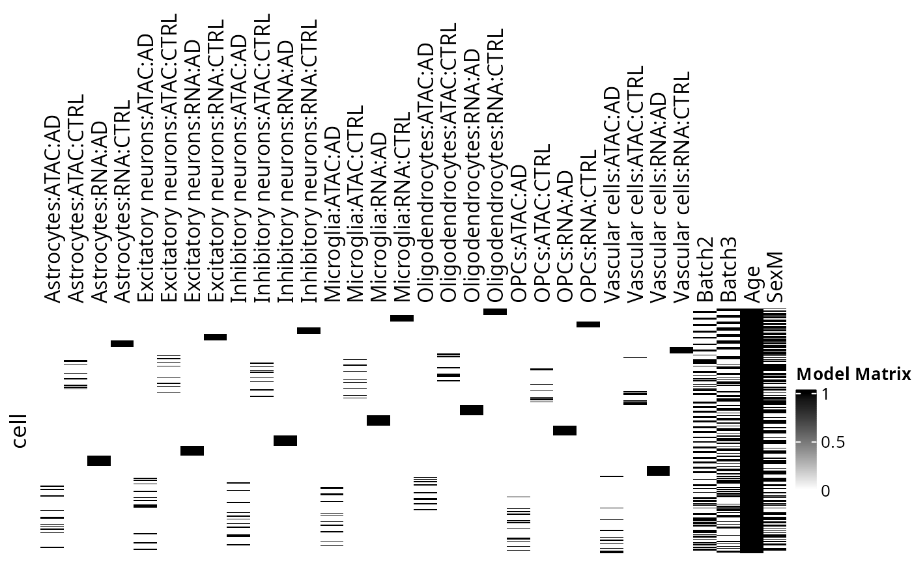
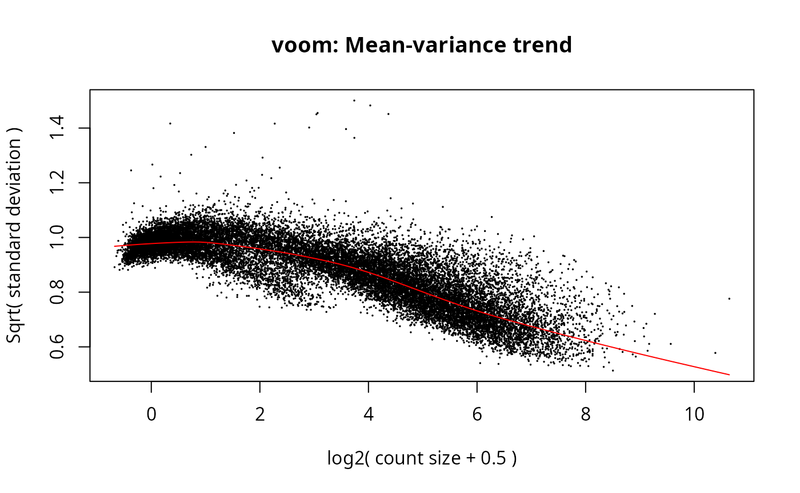
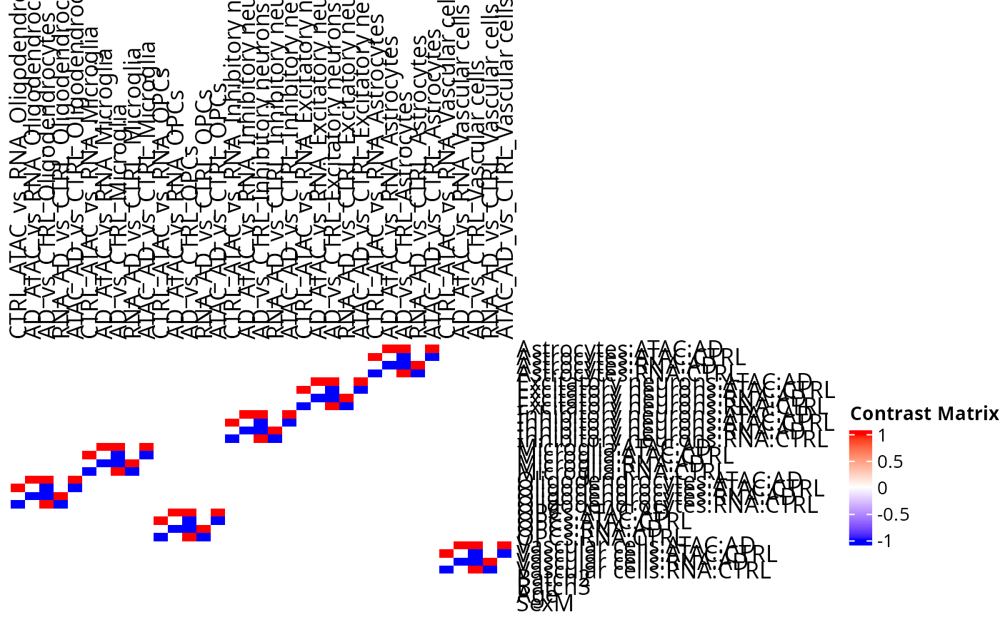
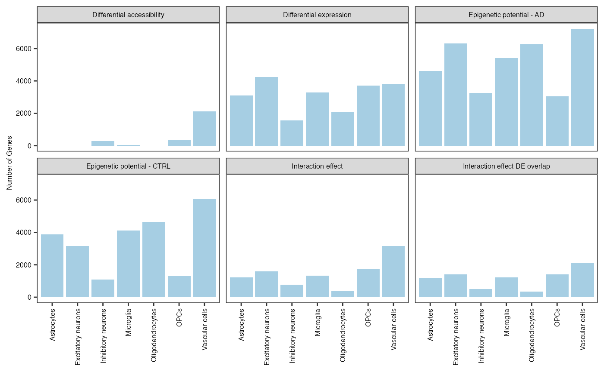
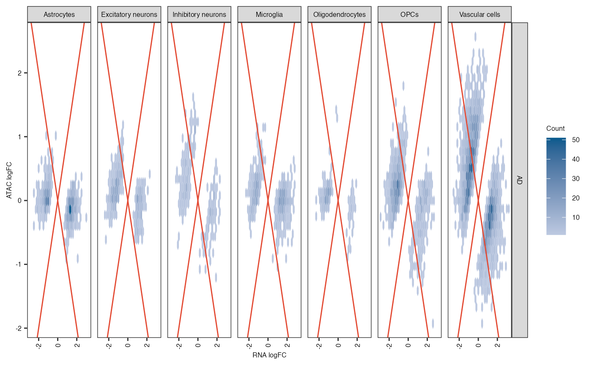
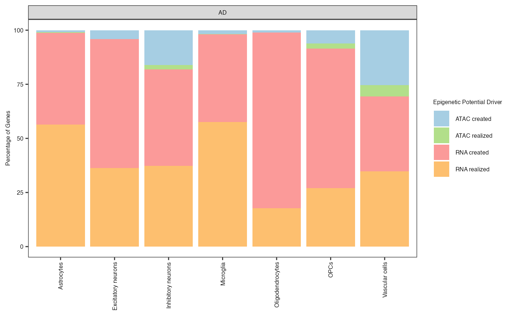

Differential epiPot analysis: Run epiPot
Source:vignettes/articles/differential_2_run_epipot.Rmd
differential_2_run_epipot.Rmd
library(epiPot)
library(tidyverse)
library(ComplexHeatmap)
library(edgeR)
library(limma)
library(conflicted)Load data
We use the aggregated count matrix and metadata created in part one of the analysis.
DATA_PATH <- tools::R_user_dir("epipot_articles", "cache")
load(paste0(DATA_PATH, "/rna_atac.rda"))Simple epiPot analysis
Rename cell types.
cell_mapping <- c(
"ODC" = "Oligodendrocytes",
"MG" = "Microglia",
"OPC" = "OPCs",
"INH" = "Inhibitory neurons",
"EX" = "Excitatory neurons",
"ASC" = "Astrocytes",
"PER_END" = "Vascular cells"
)
colnames(merged_matrix) <- str_replace_all(
colnames(merged_matrix),
cell_mapping
)Create model metadata.
sample_metadata <- create_model_frame(merged_matrix, include_condition = TRUE)
stopifnot(identical(rownames(sample_metadata), colnames(merged_matrix)))Add covariates.
sample_metadata$Batch <-
atac_metadata_filtered$Batch[match(
sample_metadata$sample, atac_metadata_filtered$Sample.ID)] |>
as.factor()
sample_metadata$Age <-
atac_metadata_filtered$Age[match(
sample_metadata$sample, atac_metadata_filtered$Sample.ID)]
sample_metadata$Sex <-
atac_metadata_filtered$Sex[match(
sample_metadata$sample, atac_metadata_filtered$Sample.ID)]
sample_metadata$group1 <-
paste(
sample_metadata$cell,
sample_metadata$tech,
sample_metadata$condition,
sep = ":"
) |>
factor()Create model matrix.
model <- model.matrix(
~ 0 + group1 + Batch + Age + Sex,
data = sample_metadata
)
colnames(model) <- sub("^group1", "", colnames(model))
Heatmap(
model,
name = "Model Matrix",
cluster_rows = FALSE,
cluster_columns = FALSE,
show_row_names = FALSE,
row_title = "cell",
column_names_side = "top",
col = circlize::colorRamp2(c(0, 1), c("white", "black"))
)
Run differential analysis.
dge <- DGEList(
counts = merged_matrix,
genes = rownames(merged_matrix)
)
dim(dge)
#> [1] 22564 266
keep <- filterByExpr(dge, group = sample_metadata$group1)
dge_filtered <- dge[keep, , keep.lib.sizes = FALSE]
dim(dge_filtered)
#> [1] 20680 266
dge_filtered <- normLibSizes(dge_filtered, method = "TMM")
voom_results <- voom(dge_filtered, model, plot = TRUE)
# z-scaling
logCPM <- voom_results$E
rna_columns <- grepl(":RNA:", colnames(logCPM))
atac_columns <- grepl(":ATAC:", colnames(logCPM))
logCPM_rna <- logCPM[, rna_columns]
logCPM_rna_z_scaled <- scale_rows(logCPM_rna)
logCPM_atac <- logCPM[, atac_columns]
logCPM_atac_z_scaled <- scale_rows(logCPM_atac)
logCPM_z_scaled <- logCPM
logCPM_z_scaled[, rna_columns] <- logCPM_rna_z_scaled
logCPM_z_scaled[, atac_columns] <- logCPM_atac_z_scaled
voom_results_z_scaled <- voom_results
stopifnot(all(colnames(voom_results_z_scaled) == colnames(logCPM_z_scaled)))
# replace expression matrix with z-scaled values
voom_results_z_scaled$E <- logCPM_z_scaledFit model.
Differential epiPot analysis
Create contrast matrix.
contrast_matrix <- create_contrast_matrix(model, sample_metadata)
Heatmap(
contrast_matrix,
name = "Contrast Matrix",
cluster_rows = FALSE,
cluster_columns = FALSE,
row_names_side = "right",
column_names_side = "top",
col = circlize::colorRamp2(c(-1, 0, 1), c("blue", "white", "red"))
)
Fit contrasts.
fit2 <- contrasts.fit(fit, contrast_matrix)
fit2 <- eBayes(fit2)Collect results.
contrast_res <- parse_limma_results_contrast(fit2, contrast_matrix)
final_results_list <- extract_interaction_results(contrast_res, sample_metadata)
final_results_RNA_list <- extract_rna_de_overlap_results(contrast_res, sample_metadata)
summary_all <- create_summary_table(contrast_res, final_results_RNA_list)
scatter_df <- assign_epipot_driver(contrast_res, final_results_list)Plot results.
plot_summary_table(summary_all)
plot_hexbin_scatter(scatter_df)
plot_driver_percentages(scatter_df)